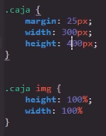
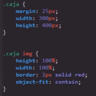
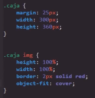
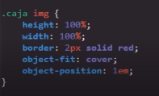

Estas propiedades tiene la función la de regular el comportamiento de las imagenes para que estas se adecuen lo mejor posible a la paguina web, conserbando la mayor calidad posible, por defecto las imagenesen HTML modifican sus dimenciones para adaptarse al cotenedor en el que se encuentra y ocupar el 100% de este, razon por el cual es muy probable que la calidad de la imagen se vea afectada, tal como se puede ver en el siguite ejemplo, el cual muestra una imagen la cual se ingreso en un contenedor con dimenciones diferentes a las de la imagen origuinal:
Codigo
Resultado
Estos problemas de deformación y perdida de calidad son los que soluciona object-fit y object-position
Object-Fit
Esta propiedad define la forma en la que el navegador trabaja las dimenciones de las imagenes, esta propiedad cuenta con multiples valores, de los cuales cada uno define una forma de ajustar la imagen a la paguina de diferente forma, estos valores son:
Contain
-
Este valor evita que la escala de la imgen se modifique para ajustarse a su cotenedor, en otras palabras mantiene la imagen con su relación alto-ancho origuinale a la vez que la centra dentro de su cotenedor:
Codigo
Resultado
Cover
-
Este valor ajusta la imagen a su cotenedor, sin embargo en vez de estirarla alterando sus dimenciones lo que hace es un "acercamiento a esta", a la vez que recorta los bordes de esta para adecuarla a las dimenciones del contenedor, en otras palabras este valor define que la imagen se afuste al cotenedor:
Codigo
Resultado
None
-
Este valor realmente define que se incerte la imagen en el contenedor con sus dimenciones origuinales, literalmente este valor indica al navegador que no realise nungun tipo de cambio sobre la imagen o sus dimenciones, sin importar si esta es muy grande o muy pequeña para su cotenedor, razón por la cual es el valor con menos uso.
Scale-Down
-
Este valor tiene la capacidad de aplicar cualquiera de los otros tres valores, siempre seleccionando aquel que pueda integrar la imagen con las menores dimenciones, por lo tanto segun las dimenciones de la paguina y de la imagen en cada ocación puede emplear cualquiera de los valores anteriormente nombrados, unicamente basandose en cual integra la imagen más pequeña.
Object-Position
Esta propiedad define la forma en la que se posicionada la imagen en su contenedor, es decir el si esta estara centrada u orillada haca un borde u otro, esta propiedad cuenta con varios valores en función de las posiciones que pueden acptar las imagenes, estos valores son:
-
Left: Define que la imagen este enfocada en su borde izquierdo
-
Right: Defin el si la imagen esta enfocada en su borde derecho
-
top: Defin el si la imagen esta enfocada en su borde superior
-
button: Defin el si la imagen esta enfocada en su borde inferior
Esta propiedad tambien acepta valores de medidas, los cules se emplean para desplazar la imagen, a la izquierda o a la derecha (valores positivos y negativos)
Codigo
Resultado
Nota: En el curso no probaron poner un segun valor para comprobar si este se ajustaria a el eje Y desplazando la imagen hacia arriba o hacia abajo, (PROBAR)